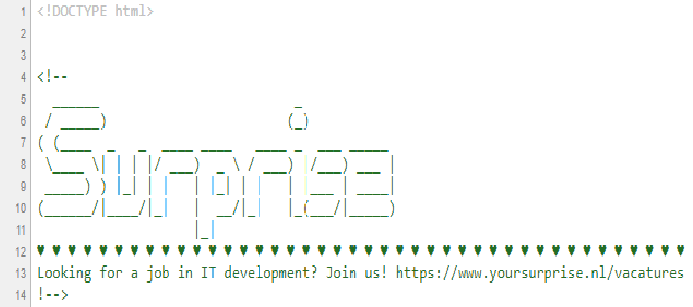

| Mendix is een bedrijf wat een programma maakt, zodat andere bedrijven of personen zelf heel gemakkelijk een programma kunnen maken. Het is Low-Code programmeren voor de klant. Het hoofdkantoor is gevestigd in Boston, but they have offices all around the world and they are proud, because they are a part of the Siemens software. | ||||||
| Mendix Demo video - Geraadpleegd op 28 oktober 2020 | ||||||
| ICT Jobs | Mendix Developer - Gewoon een developer die helpt met het maken van het programma dat bedrijven gaan gebruiken. | C# Developer - Het mendix programma 'Studio Pro' het beste van de wereld maken, zodat de developers het nog makkelijker hebben. | DevOps Engineer - Aan de slag met programma's zoals Python en Bash. Je gaat aan de slag om de betrouwbaarheid te verbeteren en om veel voorkomende procedures automatisch gaan. | Front-End Developer - Je zorgt dat mensen binnen en buiten Mendix heel gemakkelijk kunnen werken met het programma en zodat je het dus low-code eruit laat zien. | Test Engineer Automation - Je bent vooral aan het testen en geeft feedback en eventuele ideeën die verbeterd kunnen worden. | |
| Work Technologies | Python - Programmeertaal | Agile - Manier die zij gebruiken om te werken. | Git - Voor het versiebeheer. | |||
| VeraCode test openbare apps op beveiligingsfouten op allerlei verschillende manieren. Ze maken ook software die dit probeert zelf te zoeken in een app. Ze zijn gevestigd is de VS, maar werken grotendeels online, dus zij kunnen gemakkelijk met andere bedrijven samenwerken in het buitenland. | ||||||
| VeraCode Demo Video - Geraadpleegd op 2 oktober 2020 | ||||||
| ICT Jobs | Software Engineer - creëert de software die horen bij data engineering & analytics. | Automation Engineer - Testsystemen worden geautomatiseerd en onderhoud. | Principal Software Engineer DevOps - Ondersteuning van het product 'Live Cycle'. | Linux Systems Administrator - Installeert Linux systemen in het bedrijf. | ICT Security Consultant - Helpt andere bedrijven met het verbeteren van hun beveiligingen van hun netwerk. | |
| Work Technologies | Github - Voor het versiebeheer. | LinkedIn - Waarvoor het is, contact zoeken met andere bedrijven. | .NET - Programmeertaal | |||
| Your Surprise maakt 'personal gifts' en zet ze te koop op hun website. Alles is zelf gemaakt en de gifts worden ook zelf gemaakt. Als bedrijf werken ze op de agile manier. | ||||||
| Your Surprise Voorbeeld - Geraadpleegd op 2 oktober 2020 | ||||||
|  Click Link & Press Ctrl + U - Geraadpleegd op 2 oktober 2020 | ||||||
| ICT Jobs | JS Developer - Developer die focussed op maken van software met JavaScript. | PHP Developer - Developer die focussed op maken van software met PHP. | ||||
| Work Technologies | Agile - Manier die zij gebruiken om te werken. | AI - Om uit te zoeken hoeveel mensen er nodig zijn om het in elkaar te zetten. | Terraform - Om aan Google aan te geven hoeveel resources nodig zijn voor hun omgeving. | Slack - Voor interne communicatie. | ||
| Macaw zoekt altijd een oplossing voor het IT gerelateerde probleem wat het bedrijf heeft. Falen is voor hen geen optie, anders hebben ze het fout gedaan. Ze zoeken altijd naar een oplossing en proberen alles zo open mogelijk te bespreken met de uiteindelijke klant door kleine cycles in developping. Hun motto is ook: "We love challenges!" | ||||||
| ICT Jobs | Data & Analytics Consultant - Brengt data van de bedrijven in kaart. | Cloud Engineer - Helpt bedrijven om de goede cloud en security te regelen en meteen te maken. | Business Consultant DevOps - Zorgt voor de beheer- en ontwikkelprocessen bij een bedrijf. | SharePoint Office 365 Consultant - Helpt bedrijven de juiste keuze maken in SharePoint en helpt met het implementeren. | .NET Developer - Developer die focussed op het maken van .NET gebaseerde software. | |
| Work Technologies | Sitecore - Content management systeem wat ze gebruiken voor de inhoud zoals apps en websites. | Power BI - Een tool om de gegevens visueel te brengen. | Microsoft 365 - Groot pakket van Microsoft met veel tools voor bedrijven, zoals Word en SharePoint (Power BI ook). | |||
| Tweakers is een (Nederlandse en Belgische) site, die allerlei technische producten op hun site zetten met de beste optie waar te kopen. Geld verdienen zij vacatures te plaatsen en door de advertenties op hun site. Het is best een bekende site onder de meeste techneuten en redelijke gemiddelde mens. Met een beetje verstand van computers ken je deze site denk ik ook wel. | ||||||
| Tweakers Voorbeeld Geraadpleegd op 3 oktober 2020 | ||||||
| ICT Jobs | Developer - Software maken binnen het bedrijf. | Senior Developer - Ervarene developer. Helpt vooral de developers d.m.v ideeën/feedback en stuurt vaak ook een groep developers. | Data Analist - Brengt nuttige gegevens om tot duidelijke informatie. | Systeembeheerder - Je bent bezig met het onderhouden en installeren van computersystemen. | Technical Architect - Ontwikkelt en houd Technische Architectuur actueel, zoals de infrastructuur van bijvoorbeeld netwerken. | |
| Work Technologies | Google Analytics & Adsense - Analytics & Adsense wordt geregeld door deze services. | True - Tweakers wordt gehost op True. |